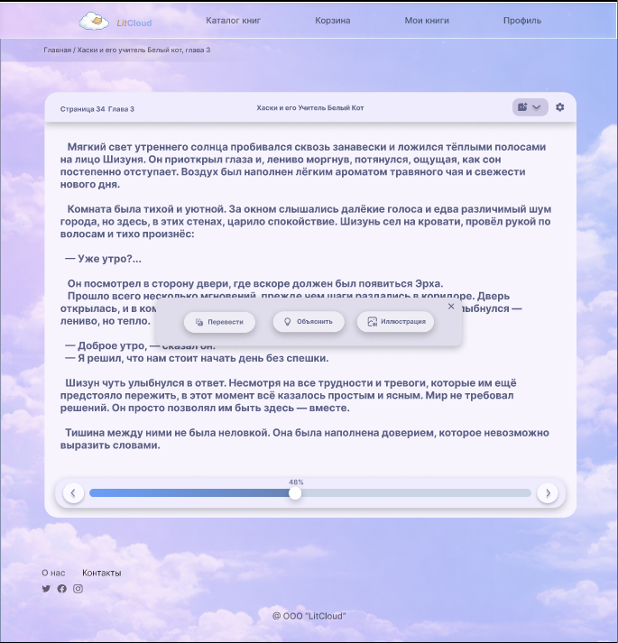
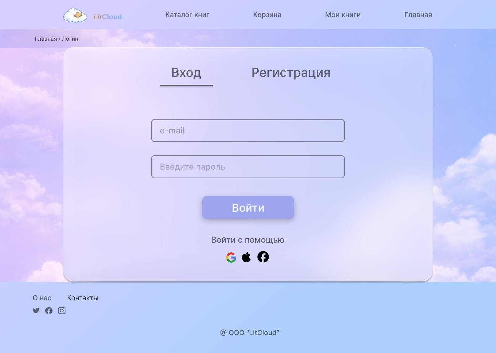
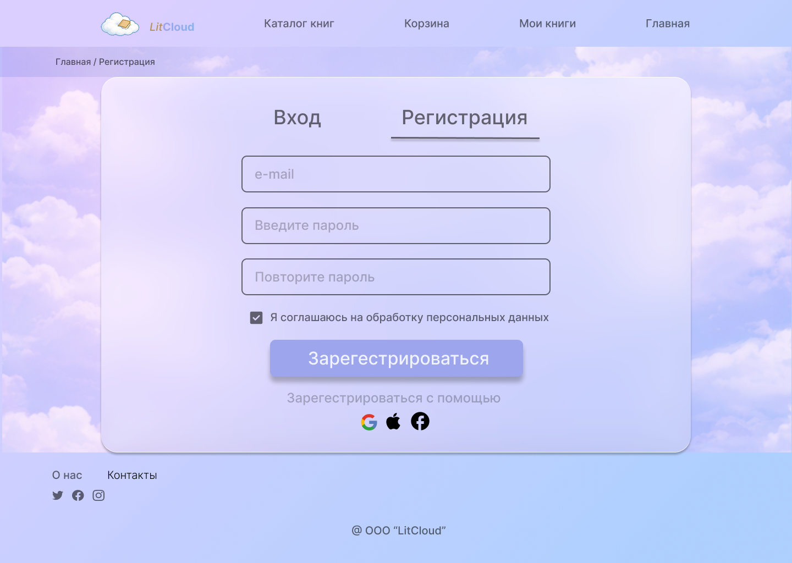
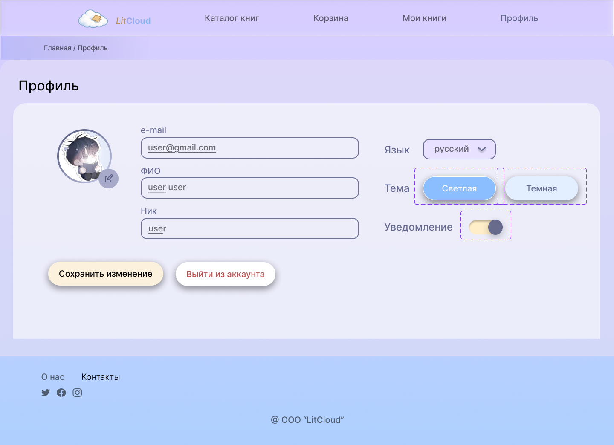

Project Overview
litCloud was born as a solution to the cluttered and overwhelming interfaces of modern online libraries. The goal was to create a minimalist platform with built-in AI reading assistance.
The Challenge
Users struggle with complex navigation, visual noise, and the lack of integrated tools for translation or term explanation while reading.
The Solution
Direct integration of AI tools within the reading environment, a simplified architecture, and a "cloud-inspired" aesthetic to reduce cognitive load.

Visual Identity & Interface
Color Palette
Soft blue and purple hues for maximum eye comfort.
Typography
Montserrat: Headings (Bold/Medium)
Inter: Body text (Regular/Light).
User Onboarding
The login and registration flow was designed to be friction-less, maintaining the "cloud" aesthetic with soft shadows and minimal input fields.


Final Results
Testing confirmed that the main user flows are understandable and efficient. litCloud achieves its core goal: providing a calm, intelligent environment for deep reading.
